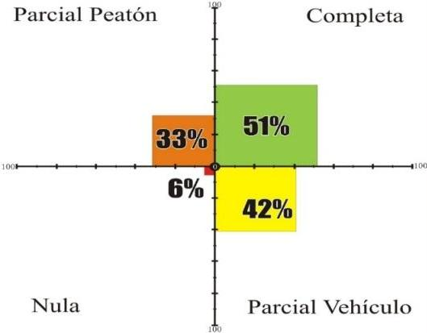

Las banquetas de nuestras calles son espacios públicos esenciales para la vida urbana. Son lugares en los que nos comunicamos, conversamos, intercambiamos, jugamos, corremos, caminamos o simplemente estamos de pie o sentados.
Las banquetas no son canales de circulación de vehículos. El tránsito de vehículos rompe la complejidad y el carácter que tienen, es decir, la forma en la que estamos y nos comportamos en ellas. La circulación de vehículos por las banquetas es especialmente negativa para los grupos más vulnerables de la sociedad; para los niños y niñas, las personas mayores o las personas con discapacidad, el sentimiento de confianza se torna en percepción de riesgo o incomodidad.
En los últimos tiempos, para resolver los problemas de seguridad y espacio disponible en las calzadas que tienen vehículos como las motos, las bicicletas o los diversos patines motorizados, algunos ayuntamientos están pervirtiendo el carácter de las banquetas permitiendo que estacionen o circulen por ellos, contraviniendo las leyes y rompiendo la cultura de uso del espacio público.
Las normativas del tráfico y, en particular, la legislación de seguridad vial desde sus inicios en los años veinte del siglo pasado, han considerado las banquetas como un espacio exclusivamente peatonal.
Infraestructura en la Laguna
Al observar la correlación entre la existencia de pavimento y banquetas, se detecta un patrón que se repite en las cuatro ciudades: la accesibilidad a las banquetas es más limitada que el acceso a vialidades pavimentadas.
De acuerdo con el Plan Estratégico para Torreón con enfoque Metropolitano (TRC2040), la ciudad de Torreón cuenta con 281 km longitudinales de vialidades principales, secundarias y periféricas y 0.50 km de vialidades peatonales (únicamente dos calles), antes de la creación del Paseo Morelos. Después de construido este paseo, se cuenta con 1.7 km más de vialidades peatonales.
Disponibilidad de pavimento y banquetas en manzana en Torreón

Fuente: Elaboración propia, 2015
En el caso de Torreón, la mitad de las manzanas cuenta con una infraestructura completa (pavimento y banquetas), ya que los vehículos y los peatones pueden circular aparentemente sin contratiempos (se considera la existencia o no de la infraestructura, no el estado físico actual). Es decir 5,249 manzanas cuentan con todas sus vialidades pavimentadas y con banquetas y sólo 577 manzanas no cuentan con pavimento ni banqueta en sus vialidades.
De acuerdo con el Reglamento de Desarrollo Urbano, Zonificación, Uso de Suelo y Construcciones, en el apartado NORMAS TÉCNICAS RELATIVAS AL DESARROLLO URBANO Artículos 199 al 205, se expresan las especificaciones en dimensiones mínimas de banquetas para usos de suelo habitacionales variando según su densidad:
Dimensiones mínimas de banquetas para usos de suelo habitacionales
| Uso de Suelo Habitacional | Banquetas en Avenidas | Zona Arbolada | Banquetas en Vialidades Locales |
|---|---|---|---|
| Artículo 199: Vivienda Densidad Muy Baja (HB) | 3.0 m | 25% | 2 m |
| Artículo 200: Vivienda Densidad Baja (H1) | 3.0 m | 25% | 2 m |
| Artículo 201: Vivienda Densidad Media Baja (H2) | 2.5 m | 40% | 2 m |
| Artículo 202: Vivienda Densidad Media (H3) | 2.5 m | 40% | 2 m |
| Artículo 203: Vivienda Densidad Media Media (H4) | 2.5 m | 40% | 2 m |
| Artículo 204: Vivienda Densidad Media Alta (H5) | 2.0 m | 20-40% | 2 m |
| Artículo 205: Vivienda Densdiad Alta (H6) | 2.0 m | - | 2 m |
Banquetas: son las estructuras viales para circulación de peatones
Artículo 230
Norma 7. Banquetas. Son las estructuras viales para circulación de peatones.
- I. Tendrán un ancho mínimo de 200 cm de superficie plana y continua.
- II. La sección transversal tendrá una pendiente entre 1% y 3% hacia la calle.
- III. Longitudinalmente podrán tener rampas con un máximo de pendiente de 12% ligadas con superficie curvas regleadas.
- IV. El acabado de la superficie deberá ser lisa pero antiderrapante.
- V. En los accesos de vehículos a las cocheras, se respetaran las dimensiones mínimas de las banquetas y las inclinaciones máximas de las rampas.
Accesibilidad para personas con discapacidad
En cuanto a disponibilidad de rampas para sillas de rueda en las banquetas, el municipio de Torreón tiene una mayor cobertura que el resto de los municipios que integran la Zona Metropolitana de la Laguna (14.3%). Por su parte, Gómez Palacio cuenta con la menor cobertura (8.9%). A su vez la población con limitación para caminar es del 2.2% siendo en total 28, 555 en la Zona Metropolitana de la Laguna.
El centro de la ciudad de Torreón es una zona atrayente de viajes de la Comarca Lagunera, por lo que comparamos la infraestructura existente para personas con discapacidad contemplando la disponibilidad de rampas en las banquetas con la que cuenta una colonia fuera del centro, es este caso Las Carolinas. Mientras en el centro el 82.5 % de las banquetas cuentan con rampas en la colonia sólo el 1.8%.
| Colonia | Porcentaje de población con discapacidad | Porcentaje de manzanas con rampas |
|---|---|---|
| Centro | 5.4 % | 82.5 % |
| Colonia muestra | 2.4 % | 1.8 % |
Fuente: Elaboración propia, 2015
En la zona centro de Torreón existe infraestructura que permite un desplazamiento aceptable dentro del sector. En la colonia Las Carolinas existe sólo una banqueta con rampa.
Las normas técnicas para garantizar los derechos de las personas con discapacidad
Artículo 423. Las normas para el entorno urbano y los espacios descubiertos serán las siguientes, seguidas de los ejemplos gráficos correspondientes:
Norma 2. Banquetas.
- Los pavimentos en las banquetas deberán cumplir las mismas condiciones que las recomendadas para andadores.
- La ocupación de las banquetas por puestos ambulantes y mobiliario urbano no deberá obstruir la circulación ni las rampas existentes.
- Los cruceros deberán contar con rampas de banqueta, así como cualquier cambio de nivel, como los causados por las entradas a estacionamientos.
- Es recomendable utilizar cambios de textura en los pavimentos, para señalizar los cruceros a las personas ciegas.
- Las excavaciones, escombros y obstáculos temporales o permanentes deberán estar protegidos y señalizados a 1 m de distancia.
- Rampas con pendiente máxima del 8%.
- Pavimento antiderrapante, libre de obstáculos y con un ancho mínimo de 1.2 m.
- Cambio de textura en el pavimento. Señalización de las rampas de banqueta.
Norma 3. Esquinas.
- Las rampas se colocarán en los extremos de las calles y deben coincidir con las franjas reservadas en el arroyo para el cruce de peatones.
- Tendrán un ancho mínimo de 1.00 m y pendiente máxima del 10%, así como cambio de textura para identificación de ciegos y débiles visuales.
- Deberán de estar señalizadas y sin obstrucciones para su uso, al menos un metro antes de su inicio.
Fomentar un mayor nivel de "caminabilidad" es importante, y para eso requerimos banquetas bien diseñadas y con sus especificaciones técnicas adecuadas, no sólo por los beneficios para la salud asociados a caminar, sino también porque hacer las zonas más "caminables" genera actividad económica, incrementa los valores de los predios y el turismo, mejora la movilidad y aumenta la calidad de vida de los usuarios.
Cuanto más caminable es una ciudad, más fuertes son los lazos que se generan en la comunidad.